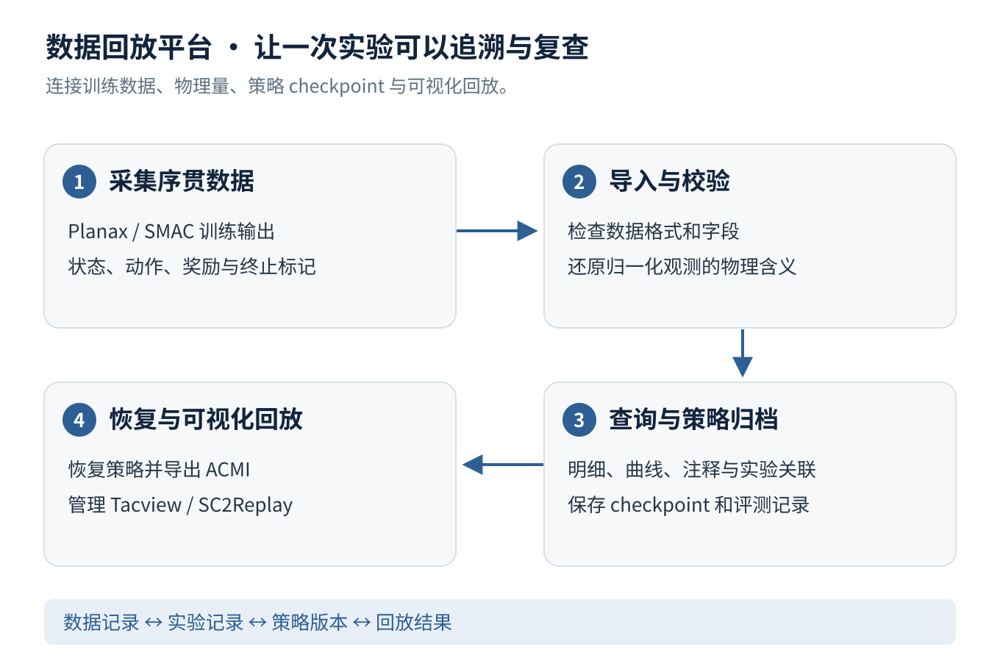
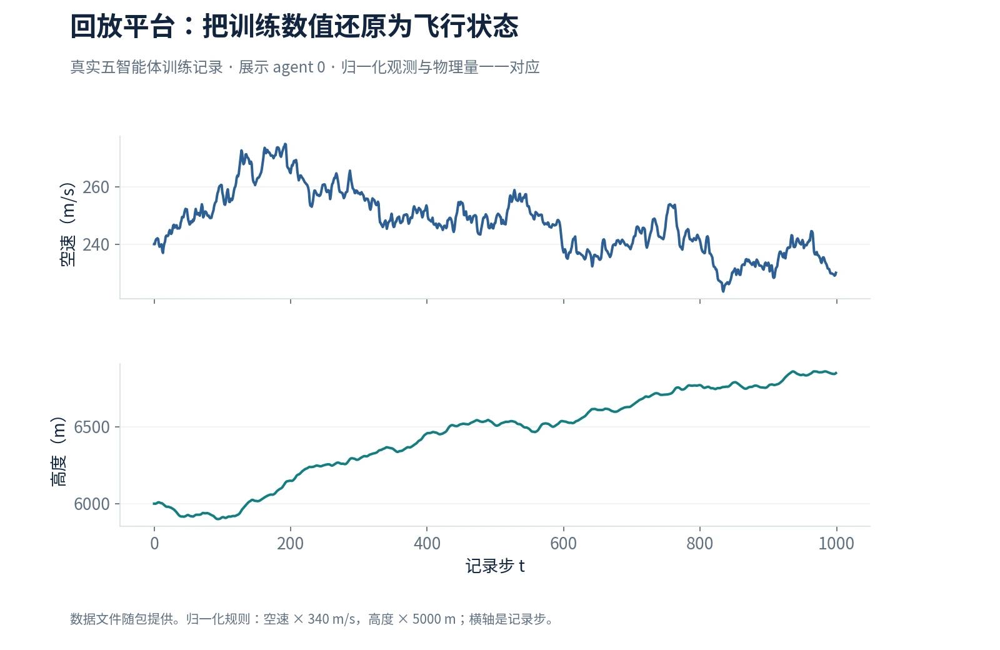

强化学习序贯数据采集与仿真回放平台
我为国家科技创新 2030“脑科学与类脑研究”重大项目子课题开发强化学习数据采集与仿真回放工具链，让训练记录可以追溯到策略版本与可视化结果，支持实验问题定位和结果复查。
- 适配 Planax 轨迹与 SMAC 数据，连接导入校验、明细查询、曲线展示、checkpoint 归档和注释管理。
- 将归一化观测还原为有物理单位的飞行状态；下方图表直接取自一段真实五智能体训练日志，并随包提供对应数据。
- 联动策略恢复与 Tacview，管理 ACMI / SC2Replay 文件；形成从训练数据、实验与模型记录到仿真回放的可追溯链路。

